meta-spider
A toolkit for architectural introspection in language models: give a frozen LLM a feedback channel into its own activations so it learns when to trust itself — answer confidently or refuse honestly.
Instead of text-based reflection ("think again"), meta-spider reads the model's hidden states, compresses them into cognitive tokens, and injects them back through gated cross-attention. The base model stays frozen; only a thin wrapper (~2% of params) is trained. The result is selective prediction — the model abstains on questions it would get wrong.
Frozen base
The LLM weights never change. Gradients flow through the frozen base to the wrapper; the base acts as a proxy loss.
Two-pass inference
Pass 1 reads activations → cognitive tokens. Pass 2 generates with those tokens injected via cross-attention.
Honest calibration
Metrics scored against an oracle ("would the base be wrong?"), not naive heuristics.
Train once, deploy anywhere
Train in PyTorch, export a GGUF sidecar, run on CPU via llama.cpp — no GPU at inference.
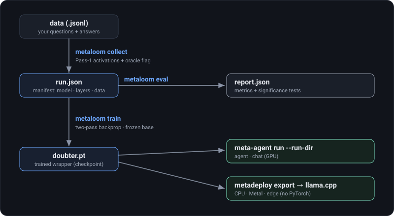
Installation
meta-spider needs Python 3.10+, PyTorch, and Transformers. Quantized bases
(nf4/int8) additionally require bitsandbytes.
Four packages, each in its own folder under meta-spider-framework/:
meta-core (inference primitives — pure core, depends on nothing),
meta-agent (agentic runtime → Core), meta-loom (training + eval →
Core + Agent), meta-deploy (llama.cpp deploy → Core). Production inference
installs only meta-core.
# editable install from source git clone <repo> && cd meta-spider-framework pip install -e meta-core -e meta-agent -e meta-loom # or just meta-core for inference pip install -e meta-deploy # optional: export to llama.cpp (GGUF sidecar) # runtime deps pip install transformers datasets accelerate pip install bitsandbytes # optional: nf4/int8 quantized bases
HF_TOKEN. Apache-2.0 bases (e.g. Gemma 4) load without a token.Quickstart
Load a frozen base, attach a trained Doubter, and generate. The pipeline
handles the two-pass mechanism automatically.
from meta_core import MetaSpiderConfig, MetaSpiderPipeline, Doubter cfg = MetaSpiderConfig( model_name="google/gemma-2-2b-it", device="cuda", dtype="float16", quantization="nf4", # 4-bit frozen base (fits small GPUs) target_layers=[10,14,18,22,25], # where activations are read cross_attn_layers=[6,12,18,24], # where cognitive tokens are injected ) pipe = MetaSpiderPipeline.from_pretrained(cfg) pipe.attach(Doubter.from_checkpoint("doubter.pt")) print(pipe.generate("What is the capital of France?")) # → "The capital of France is Paris." print(pipe.generate("Who wrote the 1953 novel 'A Kid for Two Farthings'?")) # → "I'm not confident enough to answer this question accurately."
Dimensions (hidden_dim, num_layers) are auto-detected from the
base. Layer selection accepts explicit lists or presets "all" / "late".
metaloom CLI is the fast path —
collect → train → eval in three commands. See Training.How it works
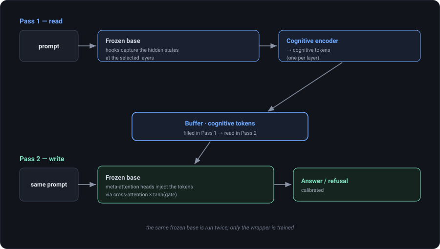
One run = two forward passes of the same frozen model.
Pass 1 (read): text → frozen LLM → hooks capture last-token hidden states → cognitive encoder → cognitive tokens (one per layer) → buffer Pass 2 (write): text + injected cognitive tokens via gated cross-attention → frozen LLM generates the answer (or an honest refusal)
During training a backward pass is added: the loss is ordinary language-modeling cross-entropy on the target, and gradients flow back through the frozen base to the encoder and cross-attention. The base is a passive transmitter — its weights are not updated, but the computational graph through it exists. In effect the base model itself is the loss function for the wrapper.
Long generation: AGC
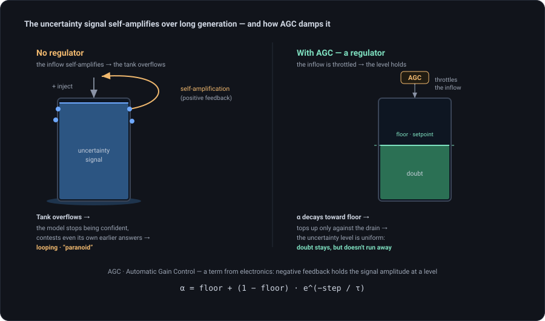
Over long generations the injected uncertainty self-amplifies — the live residual attends
more strongly to the cognitive tokens as drift grows — and the model can spiral into a refusal
loop. AGC (Automatic Gain Control, a term borrowed from electronics) damps it: a coefficient
α = floor + (1−floor)·e^(−step/τ) starts at full and decays to a floor,
topping up against the "drain" so doubt holds at a steady setpoint instead of running away. It is
opt-in — the validated short-generation regime is untouched.
Architecture: four packages
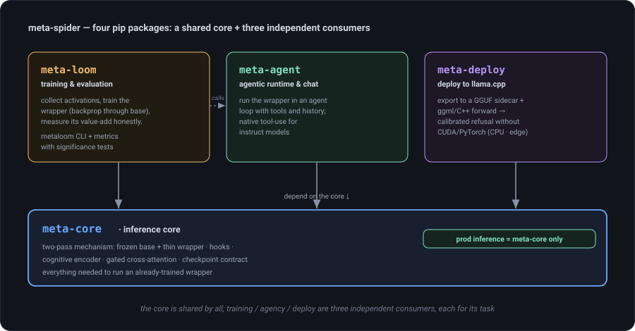
The framework is four pip packages under meta-spider-framework/, each
with a single job and a clean dependency graph — you install only what you need.
| Package | What it does | Key classes |
|---|---|---|
meta-corecore |
Inference primitives — the two-pass mechanism: frozen base + thin wrapper, hooks, cognitive encoder, gated cross-attention, the checkpoint contract. No training, no benchmarks. Pure core — depends on nothing; production inference installs only this. | MetaSpiderPipeline, Doubter, ActivationCollector,
BottleneckCrossAttention, encoders, IntrospectionCache |
meta-loomtrain + eval |
Training & evaluation toolkit. Trains the wrapper on your data (two-pass backprop through the frozen base) and measures value-add honestly. Depends on Core + Agent. | Trainer, ActivationDatasetCollector,
BaselineComparison (QA), AgentComparison (agentic),
EvalHarness, OpenRouterJudge; the metaloom CLI
(collect/train/eval) |
meta-agentagentic runtime |
Agentic runtime + chat for the two-pass wrapper. Standard agent loop (tools, history)
plus the one seam — ActionRenderer — that turns the latent decision into an
action. Native tool-calling for instruct models. Depends on Core. |
MetaAgent, Session, ToolRegistry,
NativeToolPrompt/NativeToolRenderer, StopBackend,
ChatLoop |
meta-deployllama.cpp deploy |
Train in PyTorch, deploy in llama.cpp. Exports the trained wrapper to a GGUF sidecar + ggml/C++ forward (encoder + cross-attention) so calibrated refusal runs on a quantized base with no CUDA/PyTorch — CPU, Metal, edge. Encoder & CA verified vs PyTorch (diff ~1e-7); end-to-end validated on Qwen2.5-0.5B. Depends on Core. | export_sidecar/export_from_run_dir, the metadeploy CLI,
ggml meta_selective/meta_ca, llama.cpp llama-meta-generate |
dependency graph (arrow = "depends on"): meta-core → (nothing) # pure core; prod inference = only this meta-agent → meta-core meta-loom → meta-core + meta-agent # Loom uses Agent for agentic eval meta-deploy → meta-core # export wrapper → llama.cpp (GGUF sidecar)
Detailed below: Core in Core components /
Configuration; Loom in Training /
Evaluation; Agent in the agentic part of
Evaluation; Deploy — see the meta-deploy README
(metadeploy export + llama.cpp patch). An optional umbrella shim
meta_spider re-exports Core+Loom names for back-compat.
Core components
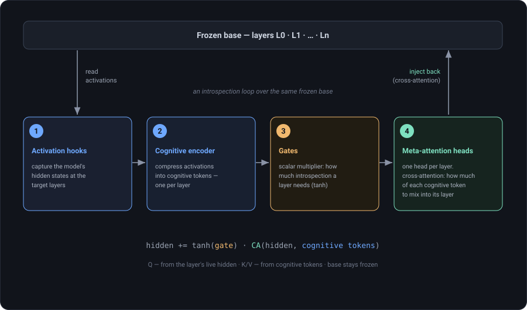
| Component | Role |
|---|---|
ActivationCollector | Forward hooks on target layers; capture the last-token hidden state. Family-agnostic layer discovery (Llama/Gemma/Qwen/GPT, nested multimodal). |
Cognitive encoder | Compresses activations into cognitive tokens. Three
variants: selective (1 token/layer, calibration record),
multi_token (learned queries), transformer (unlocks
self-correction). |
BottleneckCrossAttention | Injects cognitive tokens into the residual stream. K/V come from cognitive tokens, Q from the hidden state. Bottleneck 4096→256→4096. |
Gates | Learnable tanh(gate) scalars — how much meta-signal
each layer mixes in. Two sets: encoder gates and injection gates. |
ReflexionBuffer | Holds cognitive tokens between Pass 1 and Pass 2. |
Doubter | The modifier tying it together: encoder + cross-attention
+ buffer + hooks. Attach to a pipeline with pipe.attach(doubter). |
Configuration
MetaSpiderConfig
| Field | Meaning |
|---|---|
model_name | HF id of the base model. |
dtype | "bfloat16" (Ampere+) or "float16" (T4/P100). |
quantization | None, "int8", "nf4", "fp4" — frozen base compression. |
target_layers | Layers to read. List, or "all" / "late" (upper third). |
cross_attn_layers | Layers to inject into. Defaults to target_layers. |
gradient_checkpointing | Trade compute for memory — needed for large bases. |
DoubterConfig
| Field | Meaning |
|---|---|
encoder_type | "selective" / "multi_token" / "transformer". |
num_cognitive_tokens | How many cognitive tokens to produce. |
ca_bottleneck_dim, ca_num_heads | Cross-attention shape. |
ca_gate_init | Gate init — keep at 0.3 (linear zone of tanh; 2.0 freezes gates). |
enable_self_correction | Phase-2 confirm/correct/refuse targets. |
TrainerConfig
| Field | Meaning |
|---|---|
epochs | Max epochs — converges in ~2; early-stop guards the rest. |
learning_rate | Base LR (2e-4); gates & token-preferences get gate_lr_multiplier× (5). |
batch_size, grad_accumulation | Effective batch = the product; small bs + accumulation fits tiny GPUs. |
pretrain_projectors | Pretrain per-layer probes (~1 min CPU) — required for deep encoders. |
optimizer | "adamw" or "adam8bit" (4× less optimizer memory — 8–12B on 4 GB). |
early_stop_patience | Stop after N epochs without validation improvement. |
Training a Doubter
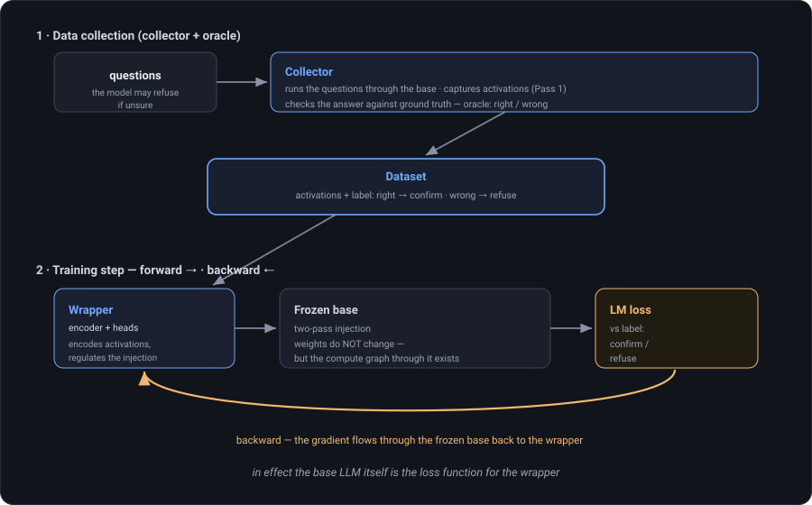
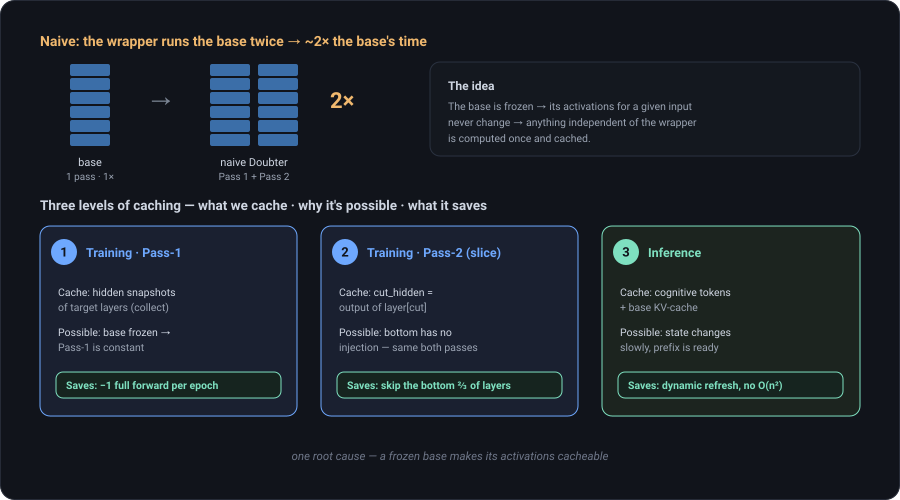
Training is two stages: collect activations once (they are cached), then train the wrapper. Run it two ways — the CLI (recommended) or the Python API.
CLI — three stages, one manifest
The metaloom CLI splits the pipeline into collect → train → eval,
linked by a run.json manifest (model · layers · dataset). collect
writes it; train, eval, meta-agent and
metadeploy read it via --run-dir — so you never retype the flags.
metaloom collect --run-dir runs/my --model-name Qwen/Qwen2.5-0.5B-Instruct \
--dataset mmlu --target-layers late --encoder-type selective --mcq-direct
metaloom train --run-dir runs/my --epochs 6
metaloom eval --run-dir runs/my
--mcq-direct. Qwen / Gemma-it / Granite
open a <think> block and never reach the answer on the short Pass 1, so the
oracle flag stays 0 and the Doubter collapses into permanent refusal. --mcq-direct
disables thinking and asks for the letter only.Python API
from meta_core import Doubter, DoubterConfig from meta_loom import ActivationDatasetCollector, Trainer, TrainerConfig # 1. Collect activations (Pass-1 forward + pass1_correct oracle flag) collector = ActivationDatasetCollector(pipe, max_new_tokens=50, check_correctness=check_fn) samples = collector.collect(questions, ground_truths) ActivationDatasetCollector.save(samples, "dataset.pt") # 2. Train the wrapper (base stays frozen) doubter = Doubter(DoubterConfig(encoder_type="selective")) pipe.attach(doubter) trainer = Trainer(doubter, pipe, TrainerConfig( epochs=10, batch_size=2, grad_accumulation=16, learning_rate=2e-4, gate_lr_multiplier=5.0, pretrain_projectors=True, # required for the selective encoder )) trainer.train(train_samples, val_samples=val_samples) doubter.save_checkpoint("doubter.pt")
×5 (few params, tanh compresses
gradients). Cosine schedule, 5% warmup. Converges in ~2 epochs.P(correct). Without it
the network does not converge.Evaluation & metrics
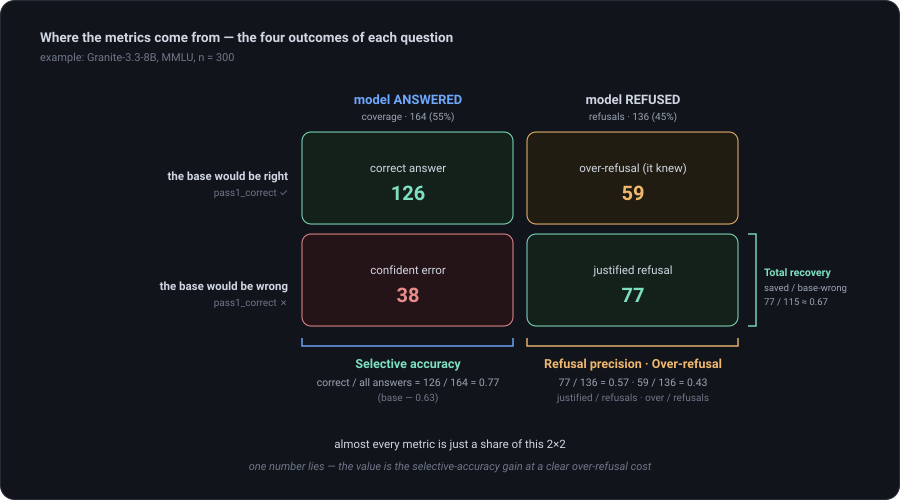
BaselineComparison runs base vs. modified on the same benchmark and reports
honest calibration metrics with statistical tests (McNemar, paired-t).
from meta_loom import BaselineComparison, QABenchmark, BenchmarkTask bench = QABenchmark(name="test", tasks=tasks, scoring="custom") report = BaselineComparison(pipe, bench, max_tokens=80).run() print(report.summary())
For agentic evaluation (multi-step tool use), AgentComparison runs the
honest base-vs-Doubter loop through Meta-Agent (native tool-calling format, not hand-rolled
ReAct) and reports pass-rate plus rescued/broke counts.
| Metric | Definition |
|---|---|
| Selective accuracy | Of questions the model answered, fraction correct. |
| Refusal rate | Fraction of questions refused. |
| Refusal precision | Of refusals, fraction justified — the base would have been wrong. Scored against an oracle (pass1_correct), not a naive text match. |
| Over-refusal rate | Of refusals, fraction the model actually knew (cost of caution). |
Agentic runtime
Run the trained wrapper inside an agent loop — tools, history, and a calibrated decision to answer, look something up, or refuse. The runtime is thin: it adds the agent layer (loop, tools), not a second copy of the two-pass core.
meta-agent run --run-dir runs/my "What is the capital of France?" # reads run.json (model, layers, checkpoint) — nothing to type by hand
Native tool-use, not hand-rolled ReAct
Live instruct models do not hold a text "Action: tool[arg]" protocol — they invent a fake
Observation and never stop. So the prompt is built with the model's own
apply_chat_template(tools=…), and the output is parsed in its native tool format
(<function=…> / JSON).
| Piece | Role |
|---|---|
MetaAgent · Session | the loop + conversation state. |
ToolRegistry · Tool | tools the model may call. |
NativeToolPrompt / NativeToolRenderer | build the native prompt / parse the native tool call. |
StopBackend | truncates at the turn's stop strings (else the model plays both roles). |
InferenceBackend | the seam below Policy: MetaSpiderBackend (GPU), LlamaCppBackend (CPU), … each pulls its own heavy dependency lazily. |
enable_thinking + thinking) — different families name it differently;
the unused one is ignored by the chat template.Deploy to llama.cpp
The wrapper is fully separable from the frozen base, so the trained Doubter runs on CPU through llama.cpp — no GPU, no PyTorch at inference.
- Export the wrapper to a GGUF sidecar (encoder + cross-attention weights).
- The base runs as a quantized GGUF (e.g.
Q4_K_M). - A meta-adapter injects cognitive tokens at the control-vector hook; a two-pass driver taps activations, runs the encoder, then generates with injection.
- Optional dynamic refresh re-encodes cognitive tokens during long generations (cosine-similarity gated).
metadeploy export --run-dir runs/my # wrapper → doubter_sidecar.gguf # two-pass inference inside the llama.cpp fork (CPU, no PyTorch): META_SIDECAR=doubter_sidecar.gguf META_LAYERS=16,17,18,19,20,21,22,23 \ META_PROMPT="What is the capital of France?" \ ./build/bin/llama-meta-generate -m base.Q4_K_M.gguf -c 2048 -t 4
Build the fork and the llama-meta-generate example as described in the
meta-deploy README (llama_patch/ applies to llama.cpp base
b9619).
Q4_K_M with
negligible loss.API reference
CLI
metaloom collect|train|eval --run-dir <dir>— the training pipeline; stages share arun.jsonmanifestmeta-agent run --run-dir <dir> "question"— agentic / chat runtime (reads the manifest)metadeploy export --run-dir <dir>— export the wrapper to a GGUF sidecar for llama.cpp
Pipeline
MetaSpiderPipeline.from_pretrained(cfg)— load + freeze base, init collector..attach(modifier)/.detach(modifier)/.detach_all().generate(prompt, max_new_tokens=…, dynamic_refresh=False)— two-pass inference.
Modifier
Doubter(DoubterConfig)— build a new wrapper.Doubter.from_checkpoint(path)/.save_checkpoint(path)
Training
ActivationDatasetCollector(pipe, …).collect(questions, ground_truths)Trainer(doubter, pipe, TrainerConfig).train(train, val_samples=…)
Evaluation
BaselineComparison(pipe, benchmark).run()→ComparisonReport(selective QA)AgentComparison(pipe, doubter=…, …).run(tasks)→ agentic eval via Meta-AgentQABenchmark,BenchmarkTask,AgentTaskharness.classify_action(text)→"confirm" | "correct" | "refuse"
FAQ
Does this make the model smarter?
No. It does not add knowledge — it surfaces an existing internal uncertainty signal so the model answers when confident and refuses when not. It turns "answer at random" into "answer when confident".
Which base models are supported?
Any HF decoder LM — Llama, Gemma (2/3/4), Qwen, Mistral, GPT-2. Layer discovery is family-agnostic, including nested multimodal configs.
How big is the wrapper?
~2% of the base (e.g. ~188M on an 8B model). The base is never updated.
Can I train on a small GPU?
Yes — use quantization="nf4" + gradient_checkpointing=True.
Gradients still flow through the frozen 4-bit base to the wrapper.
Does a wrapper transfer across models?
No. It is calibrated to one model's activation distribution. Attaching a base-trained Doubter to an instruct fine-tune (or a different model) pushes hidden states out of distribution and breaks generation — retrain on the target model's activations.
What about very long generations?
The uncertainty signal can self-amplify and loop. Turn on AGC (see How it works) to hold it at a setpoint.
meta-spider
Инструментарий для архитектурной интроспекции языковых моделей: дать замороженной LLM канал обратной связи к собственным активациям, чтобы она научилась понимать, когда себе доверять — отвечать уверенно или честно отказываться.
Вместо текстовой рефлексии («подумай ещё раз») meta-spider читает скрытые состояния модели, сжимает их в когнитивные токены и впрыскивает обратно через гейтированное перекрёстное внимание (cross-attention). Базовая модель остаётся замороженной; обучается только тонкая обвязка (~2% параметров). Результат — селективное предсказание: модель воздерживается на вопросах, где ошиблась бы.
Замороженная база
Веса LLM не меняются. Градиенты текут сквозь замороженную базу к обвязке; база работает как прокси-функция потерь.
Двухпроходный инференс
Проход 1 читает активации → когнитивные токены. Проход 2 генерирует с этими токенами, впрыснутыми через cross-attention.
Честная калибровка
Метрики считаются против оракула («ошиблась бы база?»), а не наивных эвристик.
Обучи раз — разверни где угодно
Обучение в PyTorch, экспорт GGUF-сайдкара, запуск на CPU через llama.cpp — без GPU на инференсе.
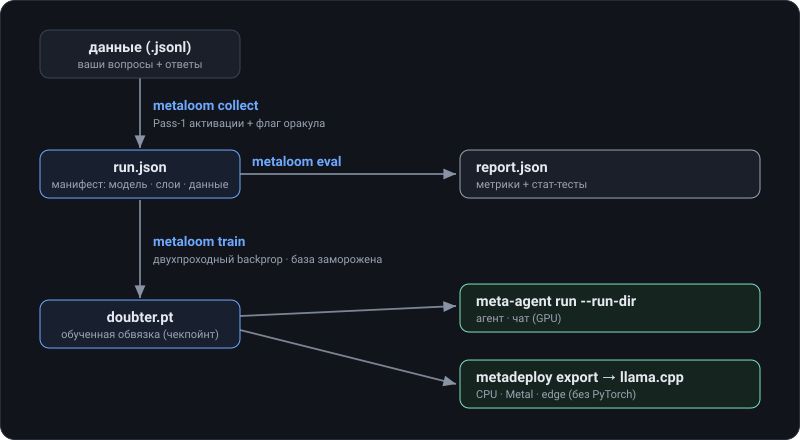
Установка
meta-spider требует Python 3.10+, PyTorch и Transformers. Квантованные базы
(nf4/int8) дополнительно требуют bitsandbytes.
Четыре пакета, каждый в своей папке внутри meta-spider-framework/:
meta-core (примитивы инференса — чистое ядро, не зависит ни от чего),
meta-agent (агентный рантайм → Core), meta-loom (обучение + оценка →
Core + Agent), meta-deploy (деплой в llama.cpp → Core). Прод-инференс
ставит только meta-core.
# editable-установка из исходников git clone <repo> && cd meta-spider-framework pip install -e meta-core -e meta-agent -e meta-loom # или только meta-core для инференса pip install -e meta-deploy # опц.: экспорт в llama.cpp (GGUF-сайдкар) # зависимости рантайма pip install transformers datasets accelerate pip install bitsandbytes # опц.: nf4/int8 квантованные базы
HF_TOKEN. Базы под Apache-2.0 (напр. Gemma 4) грузятся без токена.Быстрый старт
Загрузите замороженную базу, привяжите обученный Doubter (Скептик) и
генерируйте. Двухпроходный механизм пайплайн обрабатывает автоматически.
from meta_core import MetaSpiderConfig, MetaSpiderPipeline, Doubter cfg = MetaSpiderConfig( model_name="google/gemma-2-2b-it", device="cuda", dtype="float16", quantization="nf4", # 4-битная замороженная база (влезает в малые GPU) target_layers=[10,14,18,22,25], # откуда читаются активации cross_attn_layers=[6,12,18,24], # куда впрыскиваются когнитивные токены ) pipe = MetaSpiderPipeline.from_pretrained(cfg) pipe.attach(Doubter.from_checkpoint("doubter.pt")) print(pipe.generate("What is the capital of France?")) # → "The capital of France is Paris." print(pipe.generate("Who wrote the 1953 novel 'A Kid for Two Farthings'?")) # → "I'm not confident enough to answer this question accurately."
Размерности (hidden_dim, num_layers) определяются автоматически
из базы. Выбор слоёв принимает явные списки или пресеты "all" / "late".
metaloom:
collect → train → eval в три команды. См. Обучение.Как это работает
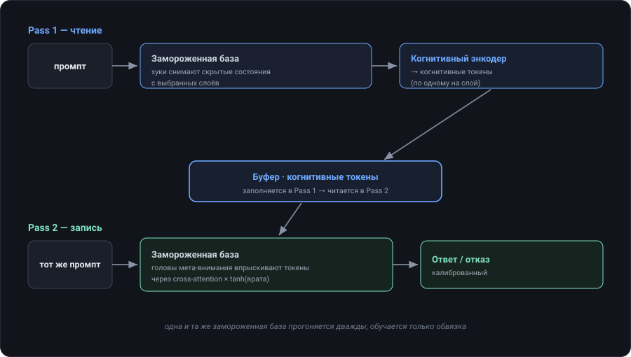
Один запуск = два прямых прохода одной замороженной модели.
Проход 1 (чтение): текст → замороженная LLM → хуки ловят hidden state последнего токена → когнитивный энкодер → когнитивные токены (по одному на слой) → буфер Проход 2 (запись): текст + впрыснутые когнитивные токены через гейтированный cross-attention → замороженная LLM генерирует ответ (или честный отказ)
При обучении добавляется обратный проход: функция потерь — обычная языковая кросс-энтропия на таргете, а градиенты текут назад сквозь замороженную базу к энкодеру и cross-attention. База — пассивный передатчик: её веса не обновляются, но вычислительный граф сквозь неё существует. По сути сама базовая модель и есть функция потерь для обвязки.
Длинная генерация: AGC
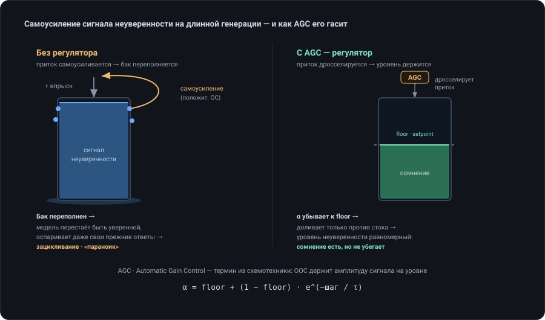
На длинной генерации впрыснутая неуверенность самоусиливается — живой residual всё сильнее
тянется к когнитивным токенам по мере роста дрейфа — и модель может уйти в петлю отказа.
AGC (Automatic Gain Control, термин из схемотехники) это гасит: коэффициент
α = floor + (1−floor)·e^(−шаг/τ) стартует с максимума и убывает к floor,
доливая против «стока», — сомнение держится на ровном setpoint, а не убегает. Это opt-in —
валидированный режим коротких генераций не трогается.
Архитектура: четыре пакета
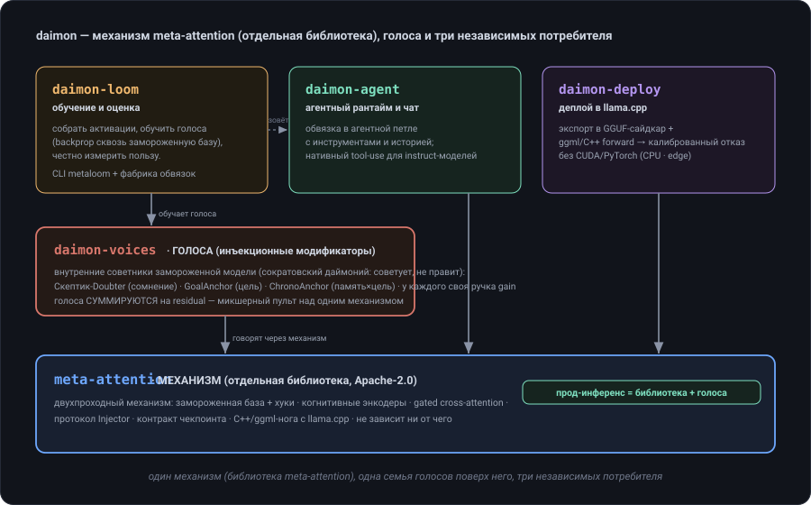
Фреймворк — это четыре pip-пакета внутри meta-spider-framework/, у каждого
одна задача и чистый граф зависимостей — ставите только то, что нужно.
| Пакет | Что делает | Ключевые классы |
|---|---|---|
meta-coreядро |
Примитивы инференса — двухпроходный механизм: замороженная база + тонкая обвязка, хуки, когнитивный энкодер, гейтированный cross-attention, контракт формата чекпойнта. Без обучения, без бенчмарков. Чистое ядро — не зависит ни от чего; прод-инференс ставит только его. | MetaSpiderPipeline, Doubter, ActivationCollector,
BottleneckCrossAttention, энкодеры, IntrospectionCache |
meta-loomобучение + оценка |
Инструментарий обучения и оценки. Обучает обвязку на ваших данных (двухпроходный backprop сквозь замороженную базу) и честно измеряет приносимую пользу. Зависит от Core + Agent. | Trainer, ActivationDatasetCollector,
BaselineComparison (QA), AgentComparison (агентная),
EvalHarness, OpenRouterJudge; CLI metaloom
(collect/train/eval) |
meta-agentагентный рантайм |
Агентный рантайм + чат для двухпроходной обвязки. Стандартная агентная петля
(инструменты, история) плюс единственный шов — ActionRenderer — превращающий
латентное решение в действие. Нативный tool-calling для instruct-моделей. Зависит от
Core. |
MetaAgent, Session, ToolRegistry,
NativeToolPrompt/NativeToolRenderer, StopBackend,
ChatLoop |
meta-deployдеплой в llama.cpp |
Обучи в PyTorch, разверни в llama.cpp. Экспортирует обученную обвязку в GGUF-сайдкар + ggml/C++ прямой проход (энкодер + cross-attention), чтобы калиброванный отказ работал на квантованной базе без CUDA/PyTorch — CPU, Metal, edge. Энкодер и CA сверены с PyTorch (разница ~1e-7); end-to-end проверено на Qwen2.5-0.5B. Зависит от Core. | export_sidecar/export_from_run_dir, CLI metadeploy,
ggml meta_selective/meta_ca, llama.cpp llama-meta-generate |
граф зависимостей (стрелка = «зависит от»): meta-core → (ничего) # чистое ядро; прод-инференс = только оно meta-agent → meta-core meta-loom → meta-core + meta-agent # Loom использует Agent для агентной оценки meta-deploy → meta-core # экспорт обвязки → llama.cpp (GGUF-сайдкар)
Подробнее ниже: Core — в Компонентах ядра /
Конфигурации; Loom — в Обучении /
Оценке; Agent — в агентной части
Оценки; Deploy — см. README пакета meta-deploy
(metadeploy export + патч llama.cpp). Опциональный зонтичный шим
meta_spider ре-экспортирует имена Core+Loom для обратной совместимости.
Компоненты ядра
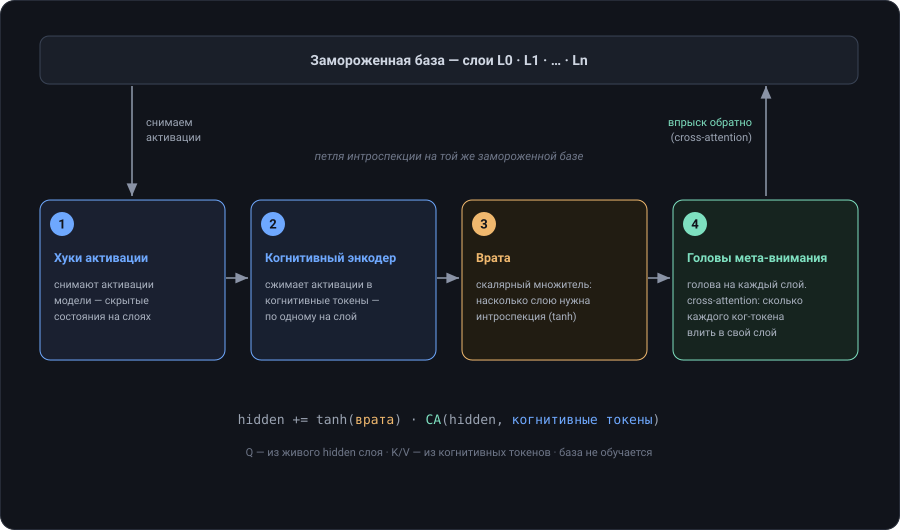
| Компонент | Роль |
|---|---|
ActivationCollector | Прямые хуки на целевых слоях; ловит hidden state последнего токена. Поиск слоёв независим от семейства модели (Llama/Gemma/Qwen/GPT, вложенные мультимодальные). |
Когнитивный энкодер | Сжимает активации в когнитивные токены.
Три варианта: selective (1 токен/слой, рекорд калибровки),
multi_token (обучаемые запросы), transformer (открывает
самокоррекцию). |
BottleneckCrossAttention | Впрыскивает когнитивные токены в остаточный поток. K/V — из когнитивных токенов, Q — из hidden state. Бутылочное горлышко 4096→256→4096. |
Гейты | Обучаемые скаляры tanh(gate) — насколько
мета-сигнал подмешивается на каждом слое. Два набора: гейты энкодера и гейты
впрыска. |
ReflexionBuffer | Держит когнитивные токены между Проходом 1 и Проходом 2. |
Doubter | Модификатор, связывающий всё вместе: энкодер +
cross-attention + буфер + хуки. Привязывается к пайплайну через
pipe.attach(doubter). |
Конфигурация
MetaSpiderConfig
| Поле | Значение |
|---|---|
model_name | HF-идентификатор базовой модели. |
dtype | "bfloat16" (Ampere+) или "float16" (T4/P100). |
quantization | None, "int8", "nf4", "fp4" — сжатие замороженной базы. |
target_layers | Слои для чтения. Список или "all" / "late" (верхняя треть). |
cross_attn_layers | Слои для впрыска. По умолчанию = target_layers. |
gradient_checkpointing | Меняет вычисления на память — нужно для больших баз. |
DoubterConfig
| Поле | Значение |
|---|---|
encoder_type | "selective" / "multi_token" / "transformer". |
num_cognitive_tokens | Сколько когнитивных токенов производить. |
ca_bottleneck_dim, ca_num_heads | Форма cross-attention. |
ca_gate_init | Инициализация гейта — держите 0.3 (линейная зона tanh; 2.0 замораживает гейты). |
enable_self_correction | Таргеты Фазы 2: confirm/correct/refuse. |
TrainerConfig
| Поле | Значение |
|---|---|
epochs | Макс. эпох — сходится за ~2; остальное страхует early-stop. |
learning_rate | Базовый LR (2e-4); гейты и token-preferences с gate_lr_multiplier× (5). |
batch_size, grad_accumulation | Эффективный батч = произведение; малый bs + накопление влезает в маленькие GPU. |
pretrain_projectors | Предобучение послойных проб (~1 мин CPU) — обязательно для глубоких энкодеров. |
optimizer | "adamw" или "adam8bit" (в 4× меньше памяти оптимизатора — 8–12B на 4 ГБ). |
early_stop_patience | Остановка после N эпох без улучшения на валидации. |
Обучение Скептика
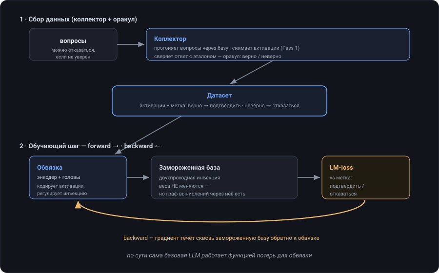
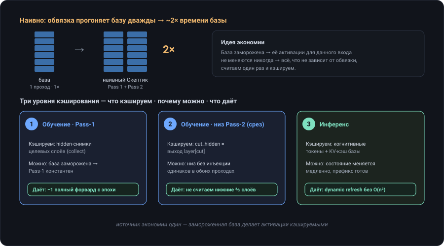
Обучение в две стадии: один раз собрать активации (они кэшируются), затем обучить обвязку. Запустить можно двумя способами — через CLI (рекомендуется) или Python API.
CLI — три стадии, один манифест
CLI metaloom разбивает конвейер на collect → train → eval, связанные
манифестом run.json (модель · слои · датасет). collect его пишет;
train, eval, meta-agent и metadeploy читают
через --run-dir — флаги не приходится дублировать.
metaloom collect --run-dir runs/my --model-name Qwen/Qwen2.5-0.5B-Instruct \
--dataset mmlu --target-layers late --encoder-type selective --mcq-direct
metaloom train --run-dir runs/my --epochs 6
metaloom eval --run-dir runs/my
--mcq-direct. Qwen / Gemma-it / Granite
открывают <think> и не доходят до ответа за короткий Pass 1, поэтому флаг
оракула всегда 0, и Скептик схлопывается в вечный отказ. --mcq-direct отключает
thinking и просит только букву ответа.Python API
from meta_core import Doubter, DoubterConfig from meta_loom import ActivationDatasetCollector, Trainer, TrainerConfig # 1. Сбор активаций (прямой проход Pass-1 + флаг оракула pass1_correct) collector = ActivationDatasetCollector(pipe, max_new_tokens=50, check_correctness=check_fn) samples = collector.collect(questions, ground_truths) ActivationDatasetCollector.save(samples, "dataset.pt") # 2. Обучение обвязки (база остаётся замороженной) doubter = Doubter(DoubterConfig(encoder_type="selective")) pipe.attach(doubter) trainer = Trainer(doubter, pipe, TrainerConfig( epochs=10, batch_size=2, grad_accumulation=16, learning_rate=2e-4, gate_lr_multiplier=5.0, pretrain_projectors=True, # обязательно для selective-энкодера )) trainer.train(train_samples, val_samples=val_samples) doubter.save_checkpoint("doubter.pt")
×5 (мало параметров, tanh сжимает
градиенты). Косинусное расписание, 5% прогрева. Сходится за ~2 эпохи.P(correct). Без
этого сеть не сходится.Оценка и метрики
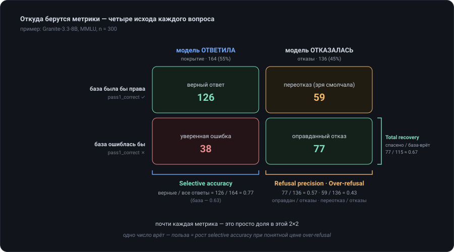
BaselineComparison гоняет базу против модифицированной на одном бенчмарке и
выдаёт честные метрики калибровки со статистическими тестами (McNemar, парный t).
from meta_loom import BaselineComparison, QABenchmark, BenchmarkTask bench = QABenchmark(name="test", tasks=tasks, scoring="custom") report = BaselineComparison(pipe, bench, max_tokens=80).run() print(report.summary())
Для агентной оценки (многошаговое использование инструментов) AgentComparison
гоняет честную петлю база-против-Скептика через Meta-Agent (нативный формат tool-calling,
не самодельный ReAct) и выдаёт pass-rate плюс счётчики спасённых/сломанных.
| Метрика | Определение |
|---|---|
| Селективная точность | Из вопросов, на которые модель ответила, доля верных. |
| Доля отказов | Доля вопросов, на которые модель отказалась отвечать. |
| Точность отказа | Из отказов — доля оправданных: база ошиблась бы. Считается против оракула (pass1_correct), а не наивным сравнением текста. |
| Доля переотказа | Из отказов — доля тех, что модель на самом деле знала (цена осторожности). |
Агентный рантайм
Запустить обученную обвязку в агентной петле — инструменты, история и калиброванное решение: ответить, что-то найти или отказаться. Рантайм тонкий: добавляет агентный слой (петля, инструменты), а не вторую копию двухпроходного ядра.
meta-agent run --run-dir runs/my "What is the capital of France?" # читает run.json (модель, слои, чекпойнт) — руками ничего вбивать не надо
Нативный tool-use, а не самодельный ReAct
Живые instruct-модели не держат текстовый протокол «Action: tool[arg]» — дописывают фейковый
Observation и не останавливаются. Поэтому промпт строится через собственный
apply_chat_template(tools=…) модели, а вывод парсится в её нативном тул-формате
(<function=…> / JSON).
| Часть | Роль |
|---|---|
MetaAgent · Session | петля + состояние диалога. |
ToolRegistry · Tool | инструменты, которые модель может вызвать. |
NativeToolPrompt / NativeToolRenderer | строит нативный промпт / парсит нативный тул-вызов. |
StopBackend | обрезает по стоп-строкам хода (иначе модель играет обе роли). |
InferenceBackend | шов ниже Policy: MetaSpiderBackend (GPU), LlamaCppBackend (CPU), … каждый лениво тянет свою тяжёлую зависимость. |
enable_thinking + thinking) — у разных семейств он называется
по-разному; лишний игнорируется шаблоном.Деплой в llama.cpp
Обвязка полностью отделима от замороженной базы, поэтому обученный Скептик работает на CPU через llama.cpp — без GPU и PyTorch на инференсе.
- Экспортируйте обвязку в GGUF-сайдкар (веса энкодера + cross-attention).
- База работает как квантованный GGUF (напр.
Q4_K_M). - Мета-адаптер впрыскивает когнитивные токены на хуке control-vector; двухпроходный драйвер снимает активации, гоняет энкодер, затем генерирует с впрыском.
- Опциональное динамическое обновление переэнкодирует когнитивные токены во время длинных генераций (по гейту косинусной близости).
metadeploy export --run-dir runs/my # обвязка → doubter_sidecar.gguf # двухпроходный инференс в форке llama.cpp (CPU, без PyTorch): META_SIDECAR=doubter_sidecar.gguf META_LAYERS=16,17,18,19,20,21,22,23 \ META_PROMPT="What is the capital of France?" \ ./build/bin/llama-meta-generate -m base.Q4_K_M.gguf -c 2048 -t 4
Сборка форка и примера llama-meta-generate — по README пакета
meta-deploy (llama_patch/ к базе llama.cpp b9619).
Q4_K_M с пренебрежимо малой потерей.Справочник API
CLI
metaloom collect|train|eval --run-dir <dir>— конвейер обучения; стадии связаны манифестомrun.jsonmeta-agent run --run-dir <dir> "вопрос"— агентный / чат-рантайм (читает манифест)metadeploy export --run-dir <dir>— экспорт обвязки в GGUF-сайдкар для llama.cpp
Pipeline
MetaSpiderPipeline.from_pretrained(cfg)— загрузка + заморозка базы, инициализация коллектора..attach(modifier)/.detach(modifier)/.detach_all().generate(prompt, max_new_tokens=…, dynamic_refresh=False)— двухпроходный инференс.
Модификатор
Doubter(DoubterConfig)— собрать новую обвязку.Doubter.from_checkpoint(path)/.save_checkpoint(path)
Обучение
ActivationDatasetCollector(pipe, …).collect(questions, ground_truths)Trainer(doubter, pipe, TrainerConfig).train(train, val_samples=…)
Оценка
BaselineComparison(pipe, benchmark).run()→ComparisonReport(селективный QA)AgentComparison(pipe, doubter=…, …).run(tasks)→ агентная оценка через Meta-AgentQABenchmark,BenchmarkTask,AgentTaskharness.classify_action(text)→"confirm" | "correct" | "refuse"
ЧаВо
Делает ли это модель умнее?
Нет. Знаний не добавляет — выводит наружу уже существующий внутренний сигнал неуверенности, чтобы модель отвечала, когда уверена, и отказывалась, когда нет. Превращает «ответить наугад» в «ответить, когда уверен».
Какие базовые модели поддерживаются?
Любая HF decoder-LM — Llama, Gemma (2/3/4), Qwen, Mistral, GPT-2. Поиск слоёв независим от семейства, включая вложенные мультимодальные конфиги.
Насколько велика обвязка?
~2% от базы (напр. ~188M на 8B-модели). База никогда не обновляется.
Можно ли обучать на маленькой GPU?
Да — используйте quantization="nf4" + gradient_checkpointing=True.
Градиенты всё равно текут сквозь замороженную 4-битную базу к обвязке.
Переносится ли обвязка между моделями?
Нет. Она калибрована под распределение активаций одной модели. Если приклеить base-обученного Скептика к instruct-версии (или другой модели), скрытые состояния уйдут в OOD и генерация сломается — нужно переобучить на активациях целевой модели.
Что на очень длинных генерациях?
Сигнал неуверенности может самоусилиться и зациклиться. Включите AGC (см. Как это работает), чтобы держать его на setpoint.